Videos
Wisconsin Ice Divide
First Dispersed Camp
Winter Training for the
2019 Tour Divide
First Experience
Electronics
Electronics Nitty Gritty
The Bike
The Stuff
The Ride
The Camp
3 Days, 3 Hundred
Adventures
The Mad Porky
(12 June 2024 MADISON, WI) My front wheel dug deeply into the mud as I pedaled onto the double track connecting the Sauk Prairie State Recreational Area with Burma Road near Devil's Lake State Park. This was near the start of a 762-mile bikepacking trip from Madison, Wisconsin to Lake Superior and High Cliff State Park near Fond du Lac. The trip took me along the Wisconsin River, into the Porcupine Wilderness, and deep into the Ottawa and Nicolet National Forests.
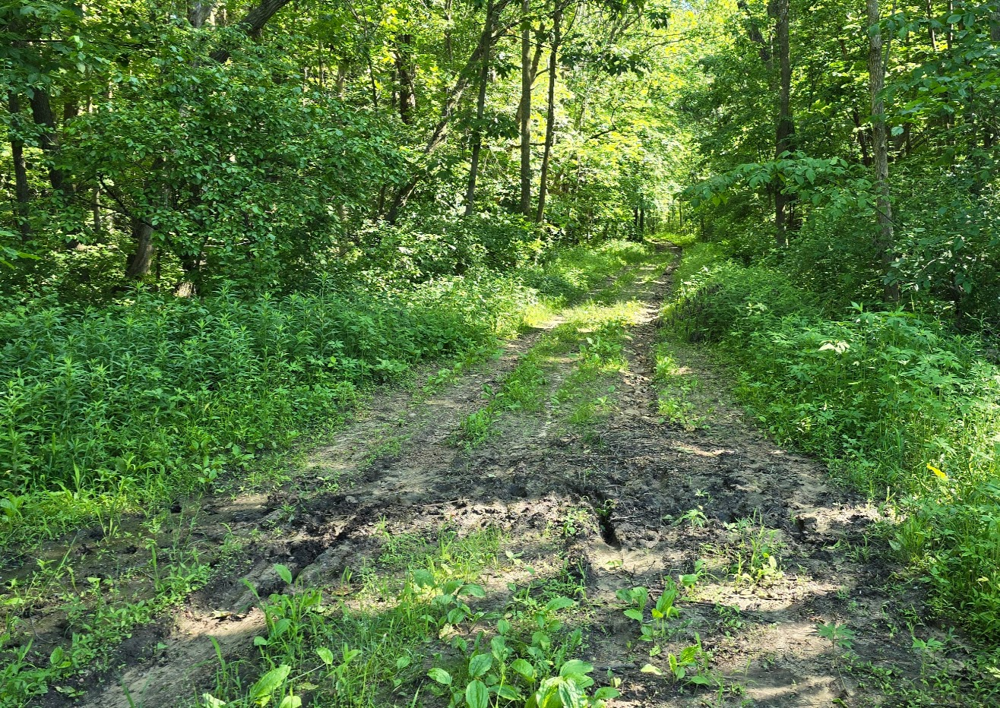
On the first day, I was propelled by tailwinds toward Buckhorn State Park, which is at the confluence of the Wisconsin and Yellow Rivers. A dam to the south created Castle Rock Lake at this location -- the state park is on a peninsula jutting into the lake. The park and adjacent wildlife areas cover more than 8,000 acres. In recent years, the area has become home to a breeding population of black bears.
When I arrived, a nice breeze off the lake kept the mosquitoes at bay, but not long after the tent was set up, the strength of the wind increased enough to push in one side of the tent. I ended up moving the tent several times to avoid either high wind or an onslaught of mosquitoes. One could not walk fast enough to avoid the mosquitoes on the trails near camp. Consequently, I was glad I could ride my bike to the remote camping site. It was also great that it was only a half-mile ride to a picnic area and shower building.

The rain started at dinner time, so I packed up my food and biked to the picnic shelter where I could sit comfortably and enjoy my meal. Earlier in the day, I stopped at Norm's Eatery in Lyndon Station for a BLT. That lunch, what I carried from home, and what I purchased at the Buckhorn Store for dinner, was all the food I needed that day. Dinner consisted of a sandwich, chips, cookies, and doughnuts. It went down with ease as I looked out across the expanse of Castle Rock Lake as the rain continued.
The remainder of my food was stored safely in OpSak scent barrier bags from REI. When in camp, these were stored in an URSAK AllMitey bear-resistant bag. I use the AllMitey on all my trips because raccoons are a problem almost everywhere. Before using it, a compression dry bag was ruined by raccoons and my sleep was often interrupted with worry. Now I sleep soundly most nights. On this trip, however, I spent a good half an hour wide awake.
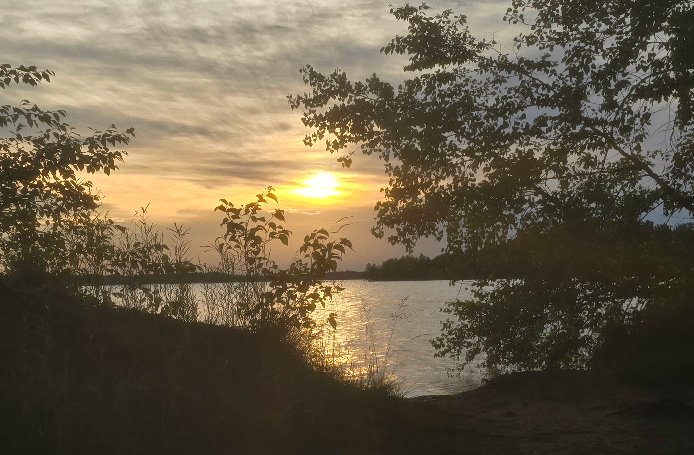
The sky cleared, the sun set, and the moon made a welcome appearance. I started to doze with a view of the stars through the netted roof of the tent. When later that night my bladder caused me to rise, I decided to pull the fly over the tent in case the rain returned. At about 3 AM, a powerful lightning storm rolled in across the lake. It was producing several flashes of lightning in a second. I found this alarming because it seemed it changed the probability of getting hit in a scary direction. Feeling helpless in this storm, I sat in my tent gripping my ankles until the storm passed. It was the most terrifying electrical storm I've ever experienced.
(13 June 2024 BUCKHORN STATE PARK, WI) The wet, muddy sand suddenly turned my front wheel, and I was flung into the bushes on the side of the road. Completely embarrassed, I collected myself, checked over my gear, and was on my way again in no time. Despite racing cyclocross for years, I'm still no good at riding ruts. I think the key is to relax and commit to the rut. I continue to fail at the first part, however, and tense up instead. These rain-soaked sandy ruts weren't the worst I've seen since the ruts were the result of only one vehicle passing before me as I made my way north through the Buckhorn natural area.
Earlier, mosquitoes chased me out of camp before breakfast. Being the only person around, I was able to have a peaceful breakfast inside the comfortable shower house near the remote campsite trailhead. One of the best things about Buckhorn State Park is there are a significant number of remote campsites and, as luck would have it, a shower house dedicated to the remote campers. I didn't see another person during my entire visit to Buckhorn State Park.
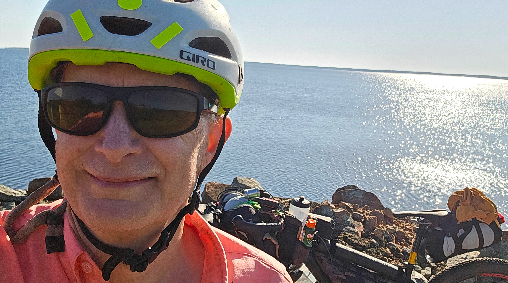
I checked my GPS unit twice and then once again. Did I really route myself onto a hiking trail? It sure looked like it, as I slid between the bushes onto a trail that soon opened up to a wild pasture. This short path delivered me to a service road that led to a staircase. It's pretty clear from the GPS unit that my intended route is at the top of the stairs. Fun! I get to carry my loaded bike 50 feet up the stairs! I tried shouldering the bike, but the technique I used during the Tour Divide eluded me. Well, there are other ways to carry a bike, and I wasn't about to miss out on whatever it is that lies ahead on the trail above. I grabbed the seat tube down near the bottom bracket to bring the front of the bike high enough to easily clear the stairs. With fifty pounds of bike and gear lifted under my arm, I proceeded to climb the stairs, sparing no effort to make the climb in a single go.
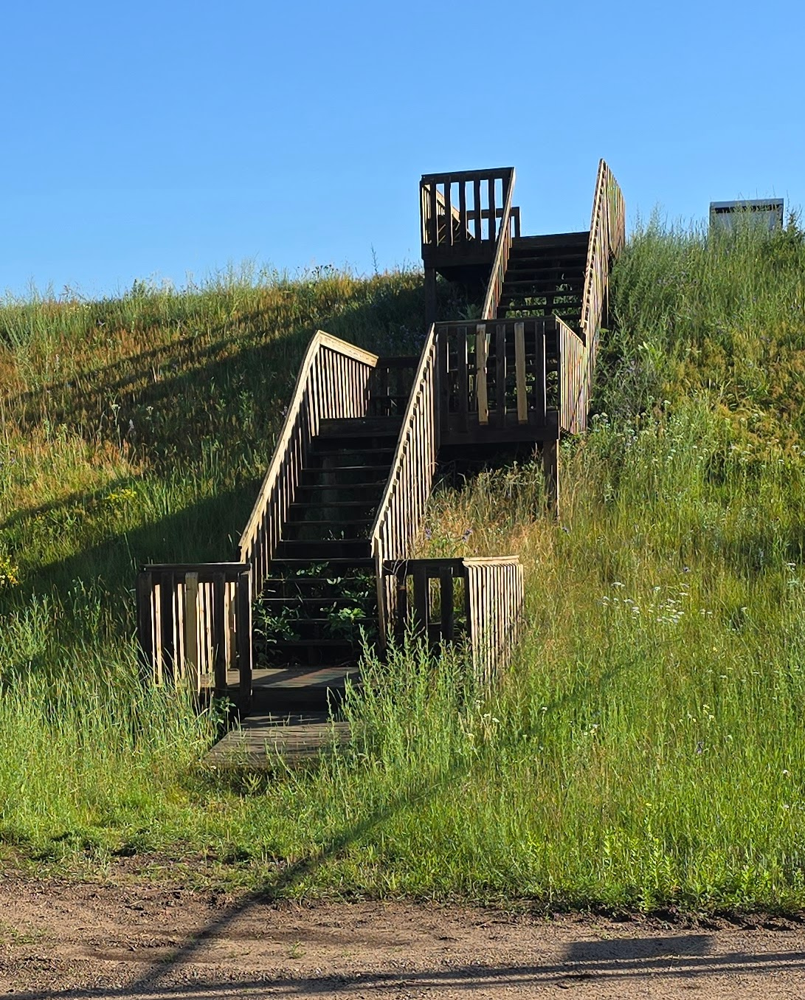
The effort was richly rewarded. The entire environment was transformed from a muddy, closed-in track to an expansive view of a reservoir on one side with an equally expansive forest on the other. The stairs led to a long wall with a gravel path on top, forming a causeway of sorts between a muddy road running along the edge of the forest and the beautiful large Petenwell reservoir.
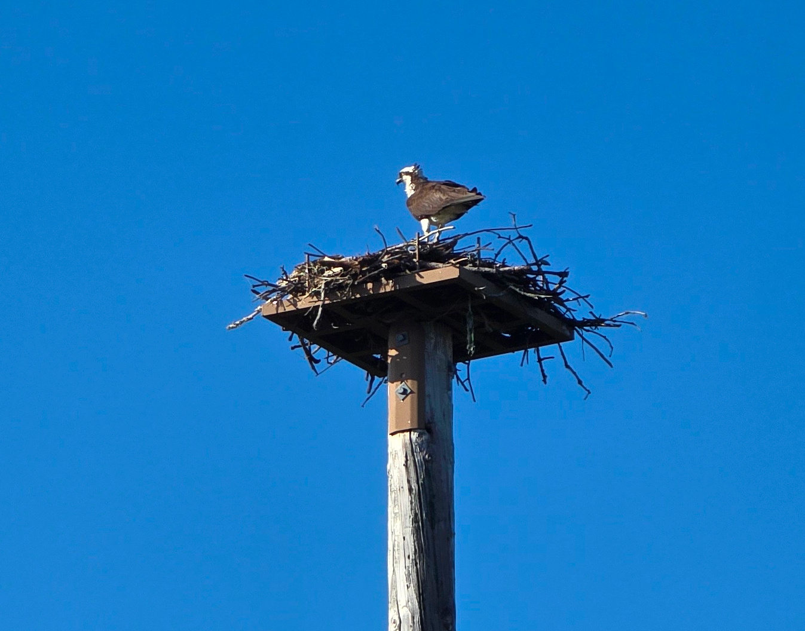
Once on the causeway, I noticed an osprey nest on a high pole. In the nest, a young bird was calling loudly for breakfast. As I rolled on, a large adult osprey flew out from the trees, over the water, and over my head, although still high enough that I felt no threat. Another osprey joined in, then a trio of golden eagles appeared and made the same journey out over the water and over my head or in front of my bike. Finally, a pair of bald eagles joined this dance of raptors, each taking turns making their presence known. I suspect they just wanted to be sure I kept moving and would not be looking to disturb their nests of young. Further down the trail, I noticed what might have been a bear print. Perhaps as I lumbered along, I reminded them of predators that, unlike me, have tree-climbing skills.
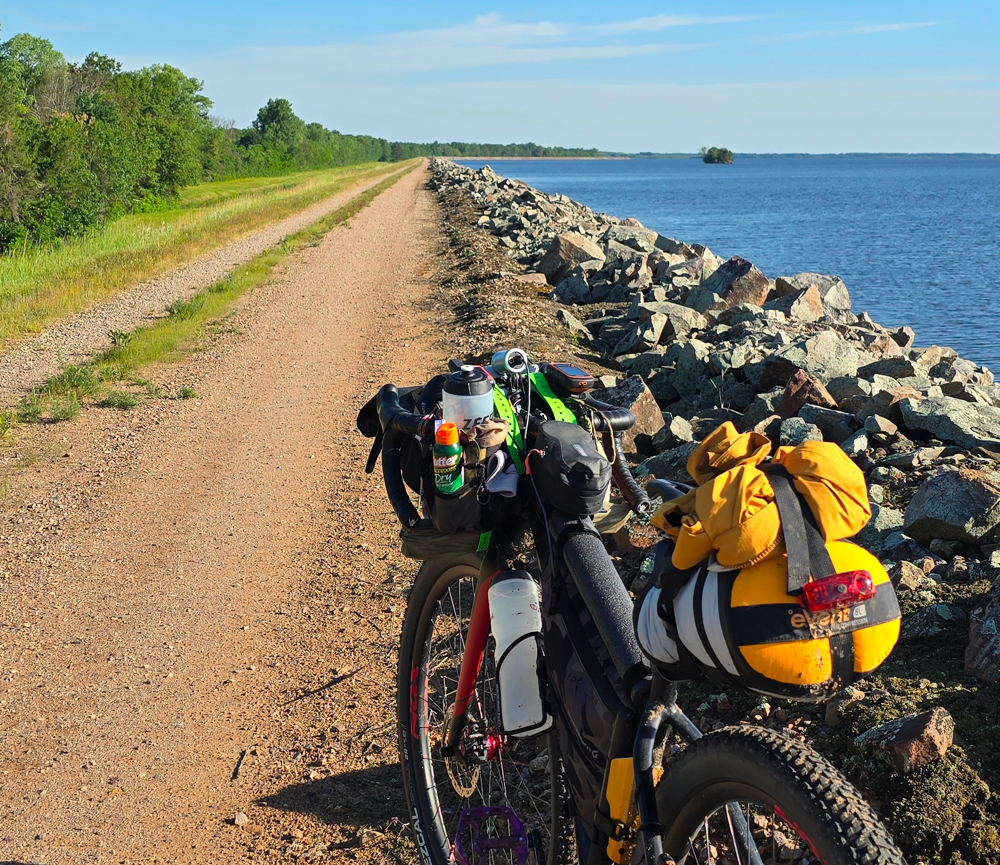
Nearly forty miles in, I stopped for a second breakfast and a near-death experience. Second breakfast is often my favorite meal of the day. After oatmeal in camp, sitting down to bacon, hashbrowns, and eggs after a few hours of pedaling was always a treat. Plus hot coffee -- not as rich and flavorful as the instant espresso I had near camp but a welcome dose of caffeine nonetheless. The West River Cafe in Nekoosa provided the breakfast I had been dreaming of for the last 10 miles, and it was served with welcoming smiles. Afterward, however, I thought I was going to get crushed by a truck. I walked the bike from the cafe across the main street before mounting. It was a short block to the next intersection, so I was still moving slowly as I approached. I saw the driver of the pickup look straight at me as he came to a stop at the stop sign. Proceeding confidently on the through street, I was startled by his sudden acceleration toward my broadside! I made an emergency turn to the left and braked! He stopped in my lane as I sat still in the oncoming lane for a moment, collecting myself and waiting for him to complete his right turn and get out of my life. The oncoming car was still a ways off and was obviously slowing down as it approached the scene. That was weird. It's true I was accelerating from a stop but in the most leisurely way possible after filling my belly with breakfast. I suspect that when I thought he looked right at me, he really just looked right past me for traffic. I didn't even register despite the front light and safety vest. To me, that's the crime -- instead of district attorneys and juries excusing motorists because they "didn't see the pedestrian or cyclist," we need to make the cost of this failure high so that everyone makes an extra effort to avoid injuring or worse the most vulnerable road users.
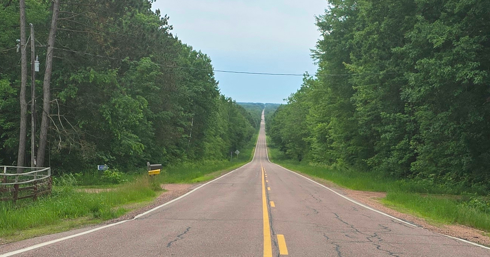
The route that day already featured gravel, sand, mud, and hiking trail. For most of the rest of the day, it would feature paved bike paths, quiet country roads, and a few busy highways. Traveling through Mosinee and the greater Wausau area, the route followed established bicycle routes. According to Open Street Maps for cycling, routes 5 and 7 were used between Mosinee and Rothschild (southern Wausau area). I found some comfort in the bike route signs that dotted the route along the old 51 highway. The heavy traffic kept me alert, but hopefully, the motorists on this route expect to see bicycles. Once in the greater Wausau area, route 7 became a pleasant bike path along the river. After crossing over to route 5, the route became an urban bike path along one side of a busy road used by residents to Walmart and other businesses. These are, in my view, the most dangerous of all paths, so I was on high alert. Motorists pulling in and out of stores and driveways don't expect two-way traffic crossing their path just parallel to the roadway -- although they should darn it despite my feeling that traffic engineers have set us up for failure!
There's a point on my route where all the designated bike routes suddenly go east or west, and none go north, which is how my route headed. At this point in my ride, it was plain to see why. It was a hill. It wasn't long by mountain standards, but it was plainly very steep and plenty long by midwestern standards. With about 99 miles in the legs at this point, I thought I might try out my easiest gear -- you know, just to see if it works. Yes, it soon seemed likely that I'd move faster by walking, but I persisted in turning over the pedals until the top. All the hills that followed seemed pretty easy after that.
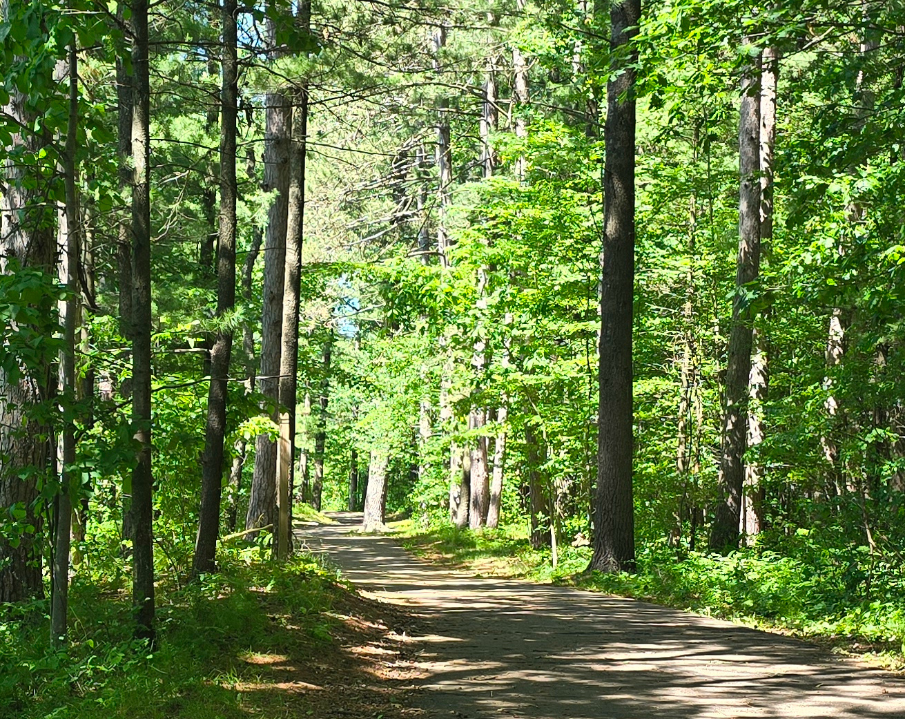
After a few fast descents and sharp climbs on a few nice gravel roads, I arrived in Merrill feeling hot and spent. At a convenience store there, the proprietor was kind and allowed me to linger in the air conditioning as I sorted myself out, drank some recovery drinks, and booked a campsite nearby. She advised me on where to have a good Mexican meal before I rolled slowly through town toward the restaurant and Council Grounds State Park just beyond.
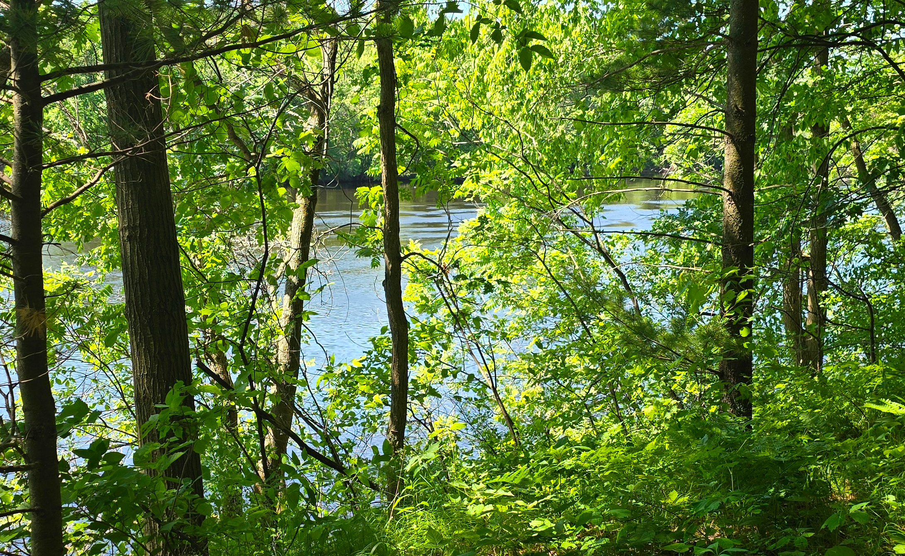
The state park was under construction. It looked like a pretty dramatic reconstruction of the shower building and all the toilet blocks. When I was there, all the old ones were raised, and only one new toilet block was open. Normally, I go days without a shower on bikepacking trips, so this did not feel like an inconvenience to me. The park was quiet, and after putting in 120 miles that day, I slept soundly.
(14 June 2024 COUNCIL GROUNDS STATE PARK, WI) Morning arrived, and off I went -- after oatmeal and coffee, of course. I was on a mission today to first get to second breakfast in Tomahawk and meet up with my buddy Bill at his family cottage near Boulder Junction. To my surprise, the pedaling didn't come easy. I had unwittingly become accustomed to a little help from the wind. Today it was light but solidly against me.
It didn't help that my chosen route was impassable. The gravel of North Star Road was supposed to continue west to the highway, only it didn't. Instead, it ended at the base of a gated driveway. I backtracked and ended up taking Lone Pine Drive instead. Stopping to figure out this workaround gave me a chance to feed the mosquitoes.

After some nice paved and gravel roads, I reached Tomahawk. Finding my way to the start of the Hiawatha Bike Trail in Tomahawk was a bit confusing. The GPS route wasn't right but close enough that I was able to follow my nose to the trail. It was time for second breakfast, but I think that because I felt slow, I opted for Subway instead of the cafe I had in mind when I departed camp that morning. Breakfast at Subway is pretty good in terms of nutrition and calories but not nearly as enjoyable as a cafe breakfast with the chatter of the locals in the background.
The Hiawatha Trail takes one to the Bearskin Trail near where the old rail line crossed from Lincoln County to Oneida County. Here the quality of the trail improved, and my spirit was lifted. The trail took me to Minocqua, and from there it followed an ATV route on roads north toward my destination.
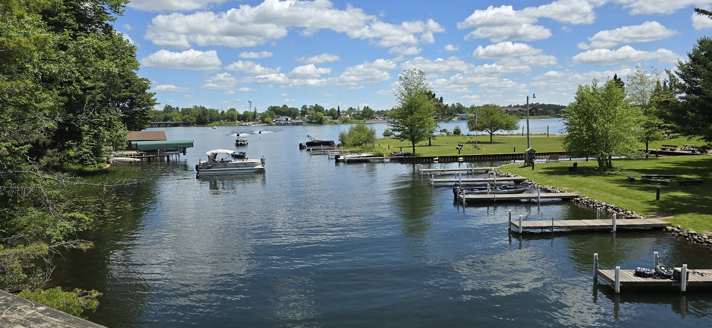
Bill kindly provided the route for most of that day. The route from Minocqua was a pleasant change from the bike trail. First, the pavement rolled well. At one point on an S-curve, an ATV driver took up a comfortable position behind, inhibiting several cars from attempting the blind pass. Not long after, it was easy to see the reason for the ATV traffic as the route turned off onto a rustic gravel road. It rolled easily enough with my mountain bike tires, and I'm sure it would be fine with 40mm gravel tires, but I wouldn't take my road bike on it. I felt stronger than I felt all day, probably due to the rolling hills. Having a visual reason for a little extra effort wiped away the feeling from earlier that day that I was just slogging along.
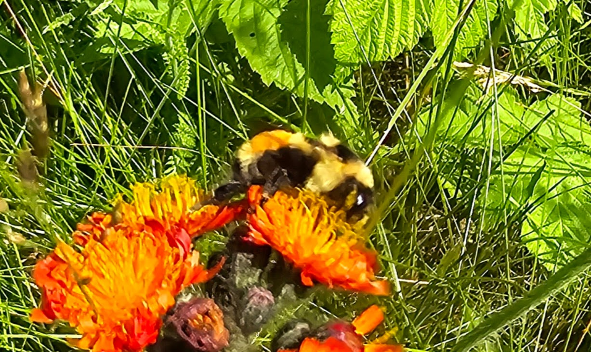
County roads and paved bike paths delivered me to my destination with only one terrifying moment. I stopped to take a picture of a Bombus ternarius (tricolored bumble bee). Well, the truth is I stopped to take a picture of a flower, and the bee just flew into the picture. The flower was along a county road and had some traffic but also a nice shoulder. Rumble strips marked the edge of the travel lane and the center line. Not long after rolling with my lights on and safety vest flapping in the wind, I was passed by a car going over 90 mph! It was a State Patrol car, and it scared me so much I had to stop pedaling to collect myself. Most of the cars that passed me moved into the oncoming lane to give me a little extra room, apparently out of prudence or courtesy. The trooper remained centered in his lane -- he possibly didn't see me or just didn't care enough to slow down or move over. Not long after, I saw the trooper walking toward the car he pulled over, ticket book in hand. On organized rides, the Colorado State Patrol did a good job of making us feel good about their efforts to keep us safe from misbehaving motorists. This trooper turned those good feelings negative in a flash.
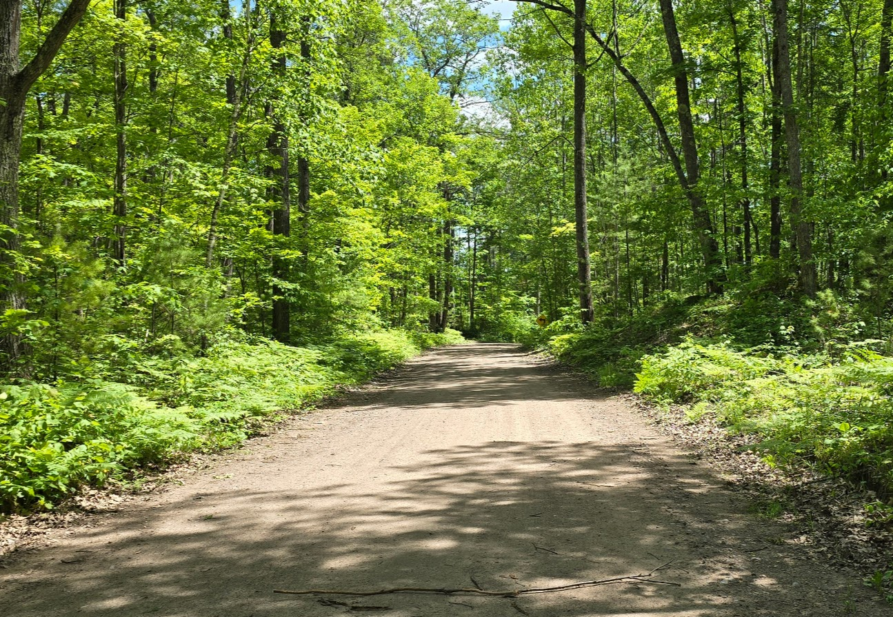
It's funny how your perceptions can make or break a day of travel. Earlier in the day, I was pushing because I just felt slow. Now here I am at the cottage almost two hours ahead of when I expected. All that time feeling like my legs weren't working well, what did that get me exactly? It's really funny I still do this after all the times I've done this before. Mostly though, I'm just really happy to see Bill and his family. It was a wonderful two-night visit at the cottage.
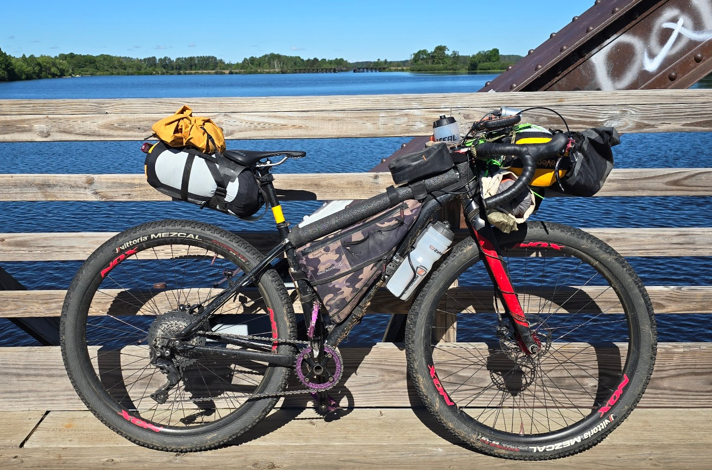
(15 June 2024 BOULDER JUNCTION, WI) Bill and I took a play day. I really wanted to see the WinMan trails, which were a short bike ride away from the cottage. Even though our bikes had no suspension, we'd at least get a look at some of the trails. Shortly after we arrived, we discovered two friends from Madison, Beth and Brian. They very kindly lent us their bikes so we could enjoy the trails with gusto. The WinMan trails are fun, machine-built trails that flow with jumps and high-banked turns. This is my favorite kind of mountain biking, and I am incredibly grateful to Beth for letting me use her bike to enjoy it.
(16 June 2024 BOULDER JUNCTION, WI) Today we set out to make a dream come true. Bill has for many years imagined biking from his family cottage to Lake Superior. So we set out together on our bikepacking bikes for a remote cabin in the Porcupine Mountains Wilderness State Park on the shore of Lake Superior in Michigan's Upper Peninsula.
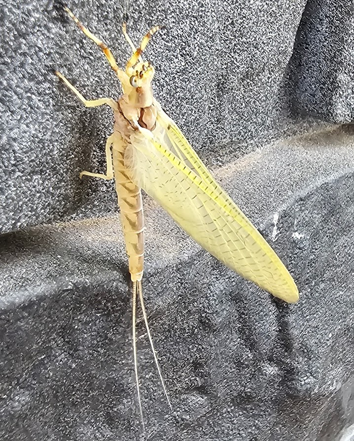
The rain was with us for most of the trip. Consequently, we opted for a route that was mostly paved. A nice tailwind kept the rain pleasant and the pedaling light. It was a mostly uneventful trip except for a flat tire and a bit of confusion on the route. Bill fixed his flat in no time at all. The confusion on the route was due to a detour for construction causing us to temporarily lose our route. The small diversion was, for me at least, fortunately uphill, so we could coast downhill to regain our route.
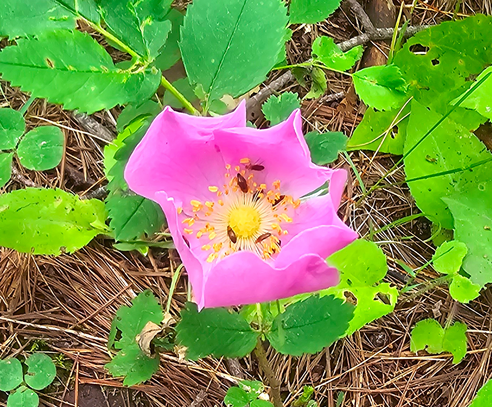
After pedaling for about five hours, we stopped for lunch in Bergland, Michigan, at Antonio's Restaurant and Pizza. The rain had mostly stopped for the day, and I was eager to shed my rain gear. In the air conditioning of the restaurant, my moist clothes started to feel cold, and by the time the bill arrived, I was ready to get outside in warmer air. The food was excellent, with good options for people that don't eat meat.
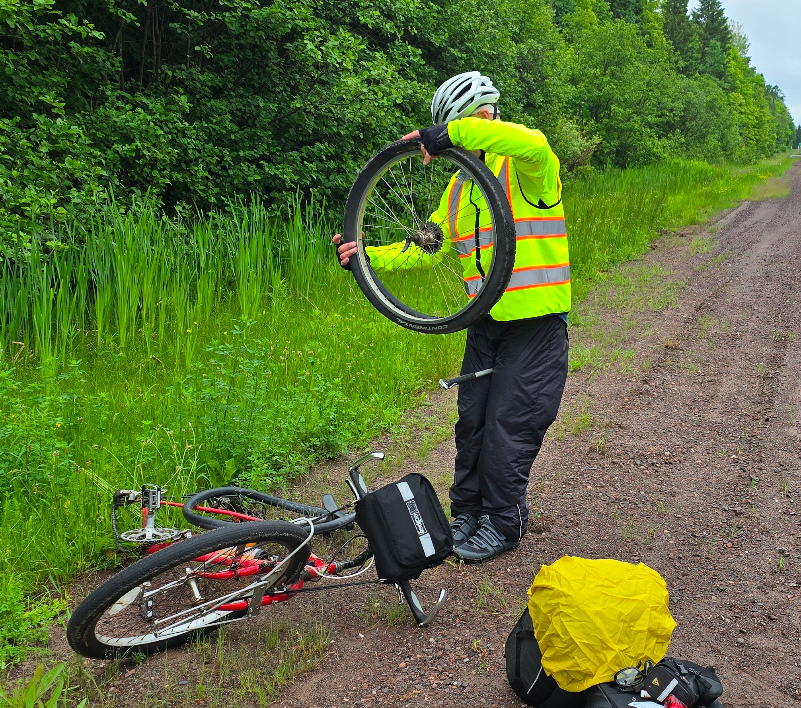
Our next stop was in White Pine. The store was, you know, the usual bowling alley, lounge, restaurant, convenience store, motel, and small engine repair place. The convenience store was a bit barebones, but we had one more place to stop before heading into the wilderness for the night.
It was pretty much downhill from White Pine to Silver City on the shores of Lake Superior. Bill's long-imagined plan of biking from the family cottage to Lake Superior was now fully realized! We had a happy second lunch or early dinner to celebrate. Our next meal would be in a remote cabin, so whatever food we have with us now would have to do until the next day -- probably mid-morning or possibly early afternoon. Perhaps it was the black flies that chased us out of Silver City that caused us to fail to take stock of our resources before leaving.
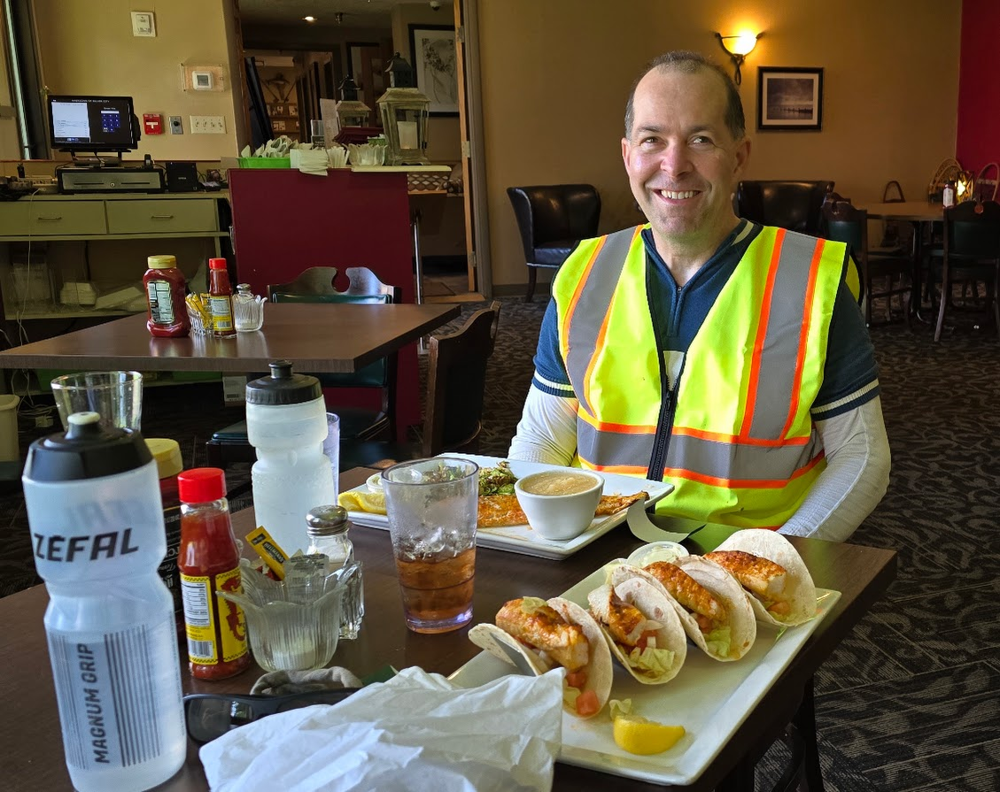
Until you have found yourself on a route that limits your progress to not much more than 1 mph, you'll have no idea what this is like. For Bill, it was perhaps an eye-opener when the trail to the remote cabin became extremely difficult. We had expected it to be hard, but I was surprised by how challenging the nearly 600-foot descent to the cabin actually was. It included large rocks to climb where progress was measured in inches, and good brakes were especially helpful. Bill's rim brakes seemed to be up to the task, at least until we had to go down a smooth off-camber rock. Sometimes it's just easier to let the bike slide down the rock on its side, and this seemed to be one of those instances. Previous experiences with such challenges had taught me that with extra attention to my footing and a large helping of patience, we would make it down to the remote cabin on the lake safely. While it can be hard at times to keep frustration at bay, it is an essential ingredient to success. I'll admit that when we had to traverse boardwalks that were too narrow for bike and rider to navigate side-by-side, I became agitated. Bill mastered a method in which he shuffled his feet sideways between the wheels of the bike. My clumsy efforts to imitate his approach resulted in a moment of frustration, but despite this, we made it to the cabin without incident. It took us an hour and 27 minutes to travel 2.4 miles from the paved road at 1,150 feet to the cabin at 624 feet above sea level.
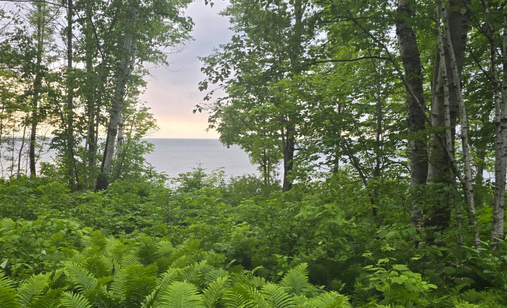
Upon arriving at the cabin, we were greeted by the terror of the black fly emergence. I had the stupid idea that if I submerged myself in the lake water, I would cool down and be safe from the flies. I stripped down and jogged toward the lake. The flies descended upon me en masse and prevented me from getting in the water. Bill told me later that my back was black with flies. We soon found ourselves to be prisoners in a remote cabin with windows we could not open for air. It was hot, and we were hotter. We made the descent to the cabin wearing our rain gear to protect us from the flies, so we were completely soaked in sweat. With our clothes laid heavy on the pegs in the cabin, we laid on the bunks nearly naked.
Dinner was meager. For me, it consisted of a peanut butter and jelly rollup, trail mix, and some bike food. I think Bill had less. I carried in 3 liters of water and, in principle, could filter more water out of the lake if not for the, you know, black flies. Bill had less, but between us, we had enough for the night and breakfast.
As dusk fell, I realized the fly activity would subside and ventured outside. Regular mosquito repellent that did not keep the flies at bay was effective enough against the mosquitoes. It was nice to be able to explore around the cabin and sit in the early evening breeze. The moon shone through the trees creating a calm and peaceful place to brush my teeth and get ready for bed. The trauma from earlier kept me from venturing to the lake shore, but in hindsight, it would have probably been nice to get an unobstructed view of the night sky.
I felt pretty good about the day. The biking to the wilderness state park was enjoyable despite the rain. We had the most excellent second lunch in Silver City, and the adventure of the trail to the cabin would be with us always. I was disappointed the cabin didn't have functioning screened windows and that the flies kept us hostage. We certainly deserved a much greater reward for our effort than was delivered. With these thoughts, I started to drift off to sleep when something large hit against the cabin.
Did a bear just knock over our bikes, hoping to find a snack in our bags? I jumped up from the bunk and peered out the window as best I could. I could see two bikes just as we left them but also the wind rocking the trees. Okay, the wind is causing a tree branch to tap the cabin from time to time. We'd have to learn to ignore it. Just in case you're wondering, no food was left outside on the bikes. The bang of that branch hitting the cabin woke me up a few times during the night, and despite knowing better, my first thought was it might be a bear every time.

(17 June 2024 PORCUPINE WILDERNESS STATE PARK, MI) It was a warm night in the cabin, but we both slept pretty well considering the wind. We each prepared our breakfast the night before by mixing water with instant oatmeal.
It was already warm, but we donned our rain gear for the rough climb back to the road to protect us from the flies. We now knew that while the difference in the elevation from the cabin to the road was less than 600 feet, it wasn't all uphill. There also would be challenging downhills over rock and root. In addition, we intended to add on more climbing once we reached the paved road in order to visit the Lake of the Clouds overlook. This made the elevational gain right after breakfast over 700 feet in just 3.5 miles.
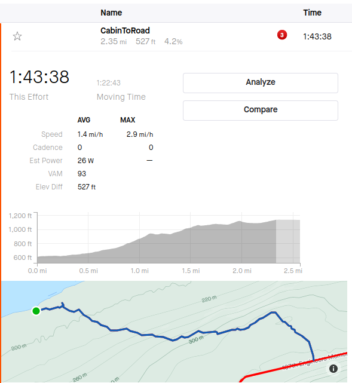
It took us two hours to reach the parking lot for the Lake of the Clouds overlook. Bill said the climb up the rough trail was easier than he expected. For me, it was just as hard as going down, except for the narrow boardwalks. Overnight I realized that by standing the bike up on its rear wheel, I could roll it along in front of me. It didn't take much effort to swing the bike forward and pull up on the bars to get the bike standing on the rear wheel only. Once accomplished, with both hands on the handlebars, I could easily roll the bike and walk along behind over the narrow boardwalk. That certainly made the trip up nicer, but clamoring up the rocks with a loaded bike was just as difficult as carefully picking my way down with my loaded bicycle.
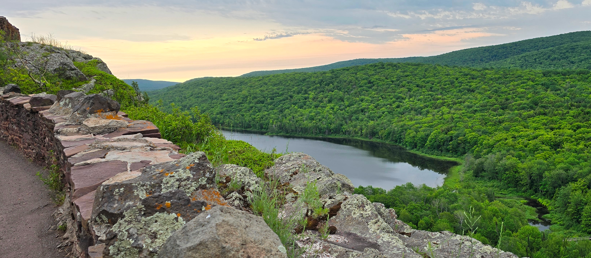
The Lake of the Clouds was well worth the extra 100 feet of climbing. It is a beautiful, special place. There's a cabin on the lake, and I was really hoping we could stay there, but it never became available. The lake itself is a few hundred feet below the overlook, so the effort to get to it might not be as great, but it's probably not easy. Besides, at the time arrangements were made, staying on Lake Superior seemed attractive. Our timing made me aware that black fly emergence was a possibility, but I thought if we had a stiff breeze coming off the lake, perhaps it wouldn't be horrible. Okay, that was dumb. Fortunately for us, up here at the overlook, there were essentially no bugs or flies. I shed all of my rain gear, hoping the long downhill would dry out my sweat-soaked clothes. Bill, fearing the return of the flies, did not.
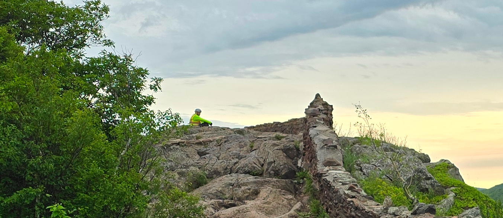
The downhill was fast and pleasant. The road was nicely paved with no tight twists to get your attention. Most of the decline was gradual enough that I kept scanning the forest for wildlife. When we picked up the key to the cabin, the ranger told us the only place in the park that has experienced bear activity was the family campground near the entrance to the park. Despite scanning the forest intently as we approached the road to the campground, no sign of a bear appeared.
After returning the cabin key to the ranger, we took a wrong turn. I didn't bother looking at my GPS unit; we were just here yesterday and knew where we were going, of course. Wrong! It got weird quickly. The road was quiet and began climbing gently, but all I could think about was getting my rain gear back on as it started to rain again. After all, my clothes were finally dry for the first time since yesterday afternoon, thanks to a pleasant downhill. Bill continued on, and I thought nothing of it. Just as I put foot to pedal, I noticed my GPS unit telling me I'm nearly a mile off course. Bill, on the other hand, was out of sight. I pedaled in his direction for only a minute to where the road straightened and I could see his flashing taillight. After bellowing his name, he paused, turned around, and we were soon heading in the correct direction. I was very happy I didn't have to chase him with my rain gear on, and I could enjoy a few more moments of wearing mostly dry clothes.
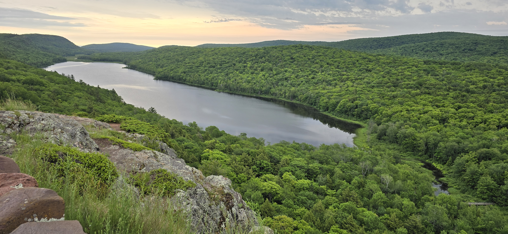
Screw you for not eating meat. That was the message from the young woman at the Porkies Outpost in Silver City. We were hungry, but I've not eaten beef since 1984, and the look of it can kill my appetite. When she said they only have burgers and refused to consider my suggestion to omit the beef patty, we had to leave. I had hoped that Paul's restaurant down the street, which served us a marvelous early dinner, was open, but we were instead disappointed to find they don't open until 3 PM. When I looked at my spreadsheet of resources, it indicated it was about 25 miles to Ontonagon and the next chance for second breakfast. Not ideal, but we finished off what little bike food we had left and soldiered on. Fortunately, we soon encountered a sign telling us Ontonagon was just 12 miles; apparently, my spreadsheet had the distance from the remote cabin.
The rain stopped as we arrived in Ontonagon, and Sly's Cafe provided the perfect second breakfast or lunch (given it was afternoon). Bill arranged for an AirBnB which was available after 3 PM. We lingered in the cafe a couple of hours to kill some time before heading to a convenience store for supplies. Bill was wetter than I, and even with his rain gear on, he was getting cold. Inside the store, I noticed a blast of hot air when I walked past the hot sandwich section and told Bill. Fearing more air conditioning in wet clothes, he was reluctant but finally relented and entered the store. I'll never forget the look on his face as he stuck his hands under the heat lamps. That was a precious moment. I left him to his personal joy to finish my shopping and check out. For a moment, I thought I might have to pry him away from those heat lamps!
On Strava (a fitness tracking app), a friend of mine left a note saying he was in Ontonagon. Soon we made contact, and the three of us had dinner in town. Andy took time from working on his property to tell us about the roads we would be traveling the next day. There's nothing like local knowledge when traveling, and we appreciated his insights greatly.
(18 June 2024 ONTONAGON, MI) Today we went our separate ways. Two blocks after leaving the AirBnB together, Bill headed north toward his cottage, and I headed east toward the Ottawa National Forest. The last few days with Bill really made this trip special. He was the ideal traveling companion. Hanging out at the cottage with his family, playing on mountain bikes, and two days of bikepacking with Bill created a marvelous interlude in the middle of this 800-mile bikepacking trip.
The Ottawa National Forest consists of one million acres stretching from the south shore of Lake Superior to the Wisconsin border. My route took me east and then south into the forest toward Iron River, Michigan. It started with a climb and then a short stretch of road that was so rough it reminded me of the Tour Divide.
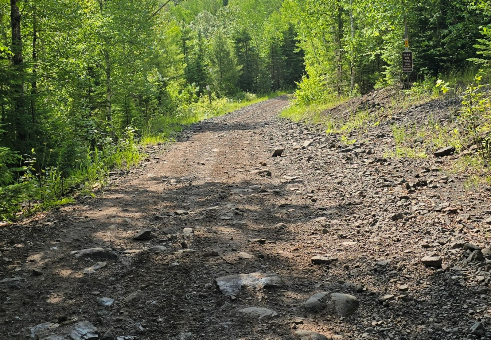
There's something uniquely special about traveling through the wilderness on your own and under your own power. When bikepacking, you have everything you need for days, and in a national forest, you can camp for the night in almost any suitable location. You're not tied to campgrounds, you can carry about two days' worth of food, and you can filter water out of streams and lakes. Because of this, the feeling of freedom I get from bikepacking through the wilderness is unmatched.
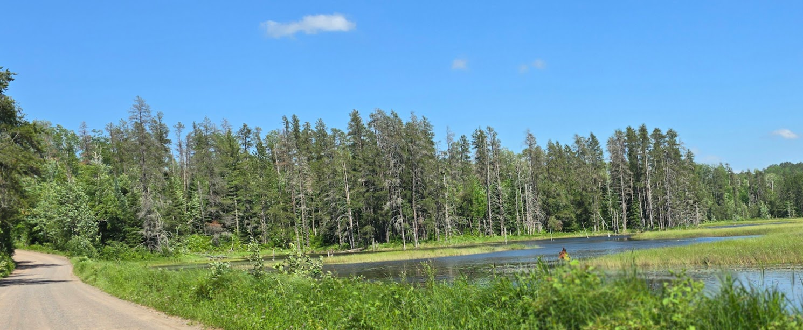
Deep within the forest, I followed gravel roads along the Sturgeon River Gorge. I must have been among the only travelers on the forest roads for a day or more because it was necessary to navigate around, over, or under a few trees that had fallen across the gravel roads. I found it strangely comforting to be so alone in the wilderness.
The forest was vast and ever-changing. Areas that had been logged very recently were rare along my route, but one could easily see the difference between areas that were untouched for a decade or more and areas that were logged a few years ago. The understory of the older forests lacked shrubs allowing for an unobstructed view deep into the woods. These forests seemed peaceful and welcoming. It was easy to imagine walking a mile into the forest to camp for the night. The floor of the newer forests was cluttered with shrubs and herbaceous plants. Some of the plants were flowering, which created interest but did not appear welcoming. The density of the growth suggested a habitat suited to mosquitoes and other biting insects, but I did not venture in.
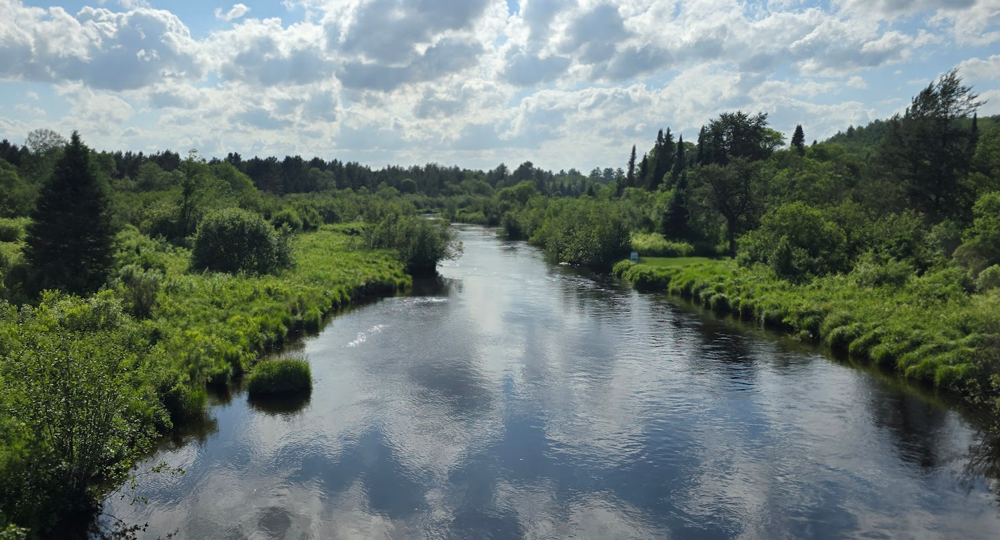
My route provided two places to stop for food and water. When I arrived at the first stop, I noticed I was wearing only one glove. Oops, how does one ride for a few miles without noticing a missing glove! Leave it to me, I guess. I'd much rather ride with my gloves than replace them with something from a convenience store, so back I went to find it. I stopped to eat and take a picture a few miles back and must have set the glove down on top of the gear strapped to the handlebars. It would have worked its way off due to the vibration and rocking of the bike as I pedaled along. I found it just shy of a mile from the convenience store where its absence was noticed.
The second stop of the day was at the Sidnaw Bar & Grill in Sidnaw, Michigan. This bar and grill stood out as an oasis in the wilderness of the national forest. I had a hearty late lunch and ordered dinner to pack with me for later. I was intent on camping at least one night in the Ottawa National Forest, so I planned to stop short of the town of Iron River, which is near the border with Wisconsin. Relaxed and full, I rolled slowly away from the grill back into the wilderness of the forest.
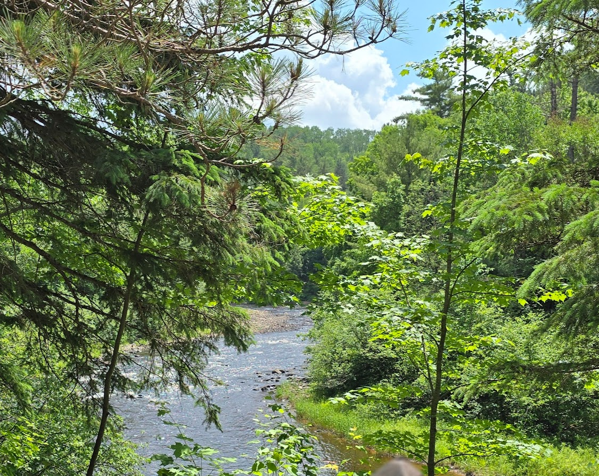
The sections of older forest seemed less common as my route continued south. This was no cause for concern, however, because my homework for the trip revealed a number of national forest campgrounds along my route. The last of these before reaching Iron River was the Paint River Fork campground just 30 miles south of Sidnaw. With that in mind, I pedaled easy and enjoyed the sight of untamed rivers cutting through the expansive forest.
The Paint River looked like a picture postcard for an iconic clear-flowing river in the wilderness. The campground on its banks was small, encompassing only four sites, and it was fortunate that I was able to claim the last one available. After placing my bike against the picnic table, I proceeded to go to the river to filter water for the overnight. While filtering, three cars slowly drove through the campground, apparently hoping to camp there for the night. My leisurely ride from Sidnaw couldn't have been more leisurely without having to find camping elsewhere. Don't get me wrong, I like dispersed camping, but finding a good site in the disturbed forest along this part of the route did not appeal to me at all.
The campsite came with some extra adventure. There was a tall, mostly dead tree leaning against an equally tall live tree which loomed above the campsite. I called this in to the national park service and then studied the situation carefully so that I could situate my tent in the safest spot available. Occasionally, the wind would rock the trees such that they would briefly come apart and bang back together with a loud crack. I figured sleeping might be a bit disturbed this night, but apparently, I was spent because I slept soundly through the night. Neither did I get crushed by the tree which did not fall during the night.
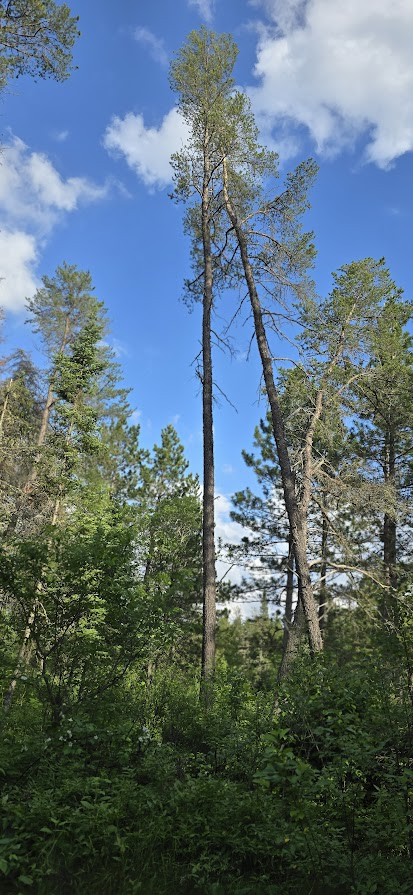
(19 June 2024 OTTAWA NATIONAL FOREST, MI) The stench nearly knocked me off the bike on three occasions. It was an odor possibly left behind by a black bear, having left the road upon hearing my approach. While I never saw a bear, it was on my mind as I spent nearly all of yesterday traveling through the Ottawa National Forest and today would be spent in the Nicolet National Forest.
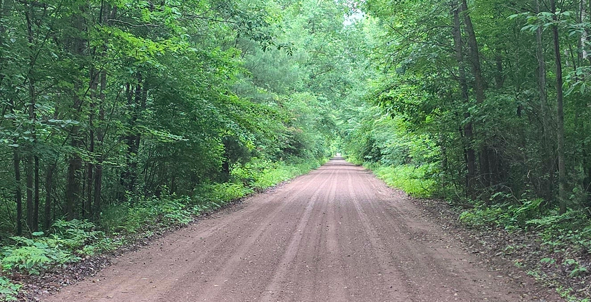
When planning this trip, I was looking forward to spending time in the wilderness. The morning of the second day in the Buckhorn state wilderness, the evening and morning with Bill in the Porkies wilderness, plus two consecutive days in national forests, were definitely the highlights of the over 800-mile route. Adjacent to the Ottawa National Forest, the Chequamegon-Nicolet National Forest covers more than 1.5 million acres of northern Wisconsin. The Nicolet side of the forest stretches 661,000 acres across northeastern Wisconsin.
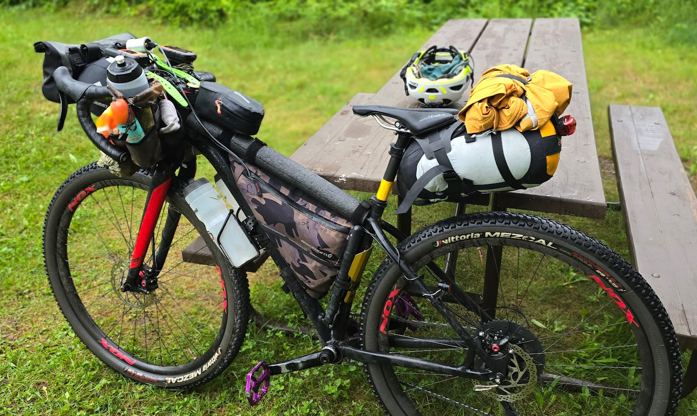
Before entering the Nicolet, I stopped for breakfast in Iron River, Michigan. I was looking forward to another diner breakfast, but the diner was closed. The alternative, according to my planning, was a convenience store on route. I stopped there and pulled out my phone to consult the OSMAnd App. I could see a couple of possibilities back in the direction I came along Genesee Street. I soon found the Contrast Coffee Company and entered, hoping for at least some baked goods if not an egg sandwich. Wow, was I happy to find a full food menu with toasts, crepes, bakery, paninis, and other breakfast items. Score! I enjoyed a large breakfast and purchased a panini to have later for lunch somewhere in the national forest.
Following the Iron River, the Stateline ATV/bike trail headed south from the town of Iron River, Michigan, toward Wisconsin. The Stateline Trail crossed the Brule River near its confluence with the Iron River, and that is where one enters Wisconsin. From here, the trail continues into Wisconsin and is called the Nicolet State Trail. Open to ATVs and bicycles, this trail has a reputation for being hard on cyclists. I've read reports of discourteous ATV users and a challenging surface, including potholes, washboard, soft sand, and deep loose gravel. The few segments of the Stateline and Nicolet trail on my route were in great shape, providing a mostly smooth and firm small gravel surface on which to roll. As for ATV users, there were none. Absolutely zero all day. Of course, it was a weekday morning with a threat of rain. I suppose it would be different on a sunny Saturday in nice weather.
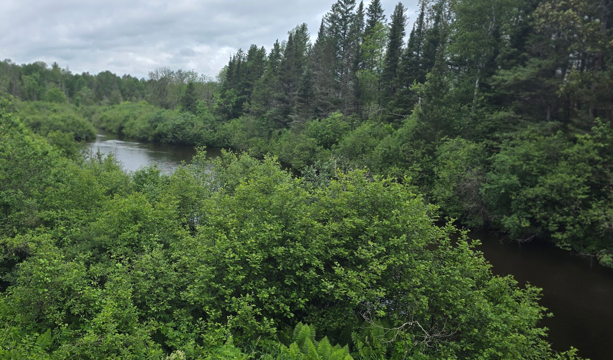
Leaving the Nicolet Trail for forest roads provided more views deep into some of the older stands of trees. A grouse suddenly appeared at the side of the road, acting like its wing was damaged, probably to draw me away from her nest. Deer, of course, appear often on the lonely gravel roads, standing still as if in a trance until suddenly, hit by awareness, they leapt gracefully into the woods.
As the gravel road turned a corner and gently began to rise, I was hit by a wall of stink. At almost the same time, I heard a crash in the trees from behind. I paused and almost came to a complete stop on the gradual incline while turning the bike so that I could get a good look behind. Nothing was there, and the sound of movement in the woods had stopped. It was probably a big animal, and the smell suggested it was probably on the road when it heard the crush of gravel underwheel. This sequence of events played out twice more that morning. I was hoping to see a bear, at a safe distance, but was happy that they ran away from me after all. Of course, I'll never know for sure what caused these walls of stink.
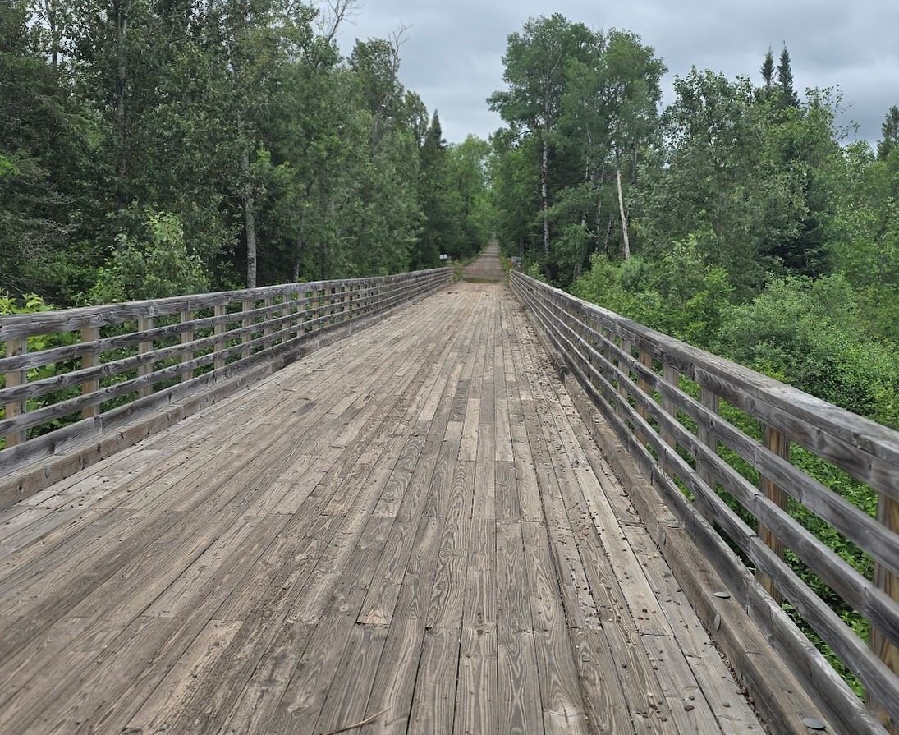
My route failed me, and I probably could have done a better job of navigating on the fly. The satellite image clearly suggested a road and a bridge over the Peshtigo River. The problem was when I got there, the road was gated off and marked private property. By taking a forest road east and then south, I eventually came to a county road that took me back to my planned route. This took more than an hour, and I could feel myself becoming impatient. Initially, this detour was going to take me just a couple of miles to the Rat River ATV Trail, which was part of my planned route. When I got to the trail, however, it was clearly unused and partially under water. After this 12-mile detour, I felt relieved and my thoughts turned to dinner.
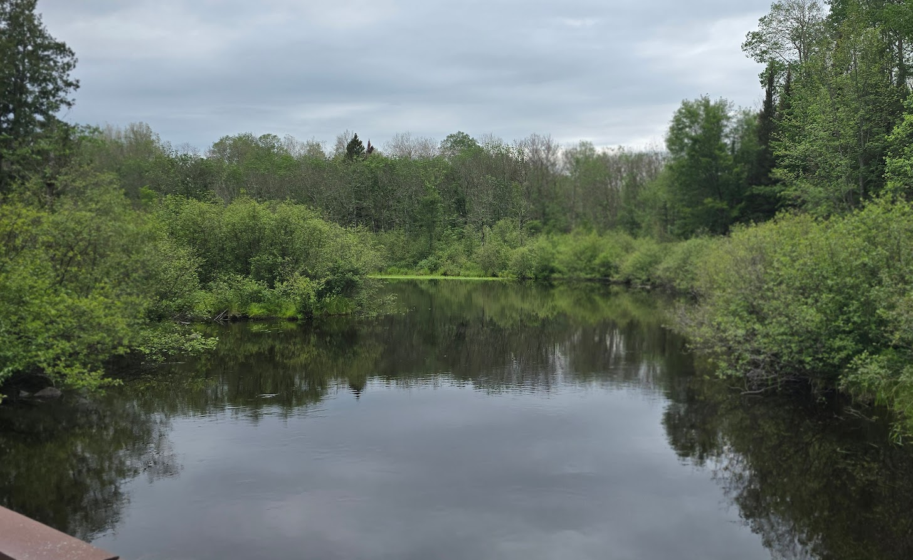
Parts of my route through the Nicolet National Forest were taken from Shane Hitz and were published online by the Bike Fed of Wisconsin. The story of the route and photos can be found in Dave Schlabowske's writeup of a group trip on the route. For this reason, most of my route had been tested and resources identified. Included in Shane's route was a writeup of some of the stops, including one on the Wabee Lodge Restaurant. Now back on route, my stomach was targeting the lodge, and my legs complied.
The Wabee Lodge is a complex of buildings on a lake surrounded the National Forest and includes rooms, suites, and cabins. The restaurant was busy, and the food was good. It was somewhat shocking after spending most of two days without seeing people to be tossed into such a busy and chaotic environment. After about 95 miles of pedaling, I had no problem eating a large dinner. Afterward, it was a relaxed fifteen-mile pedal to the Bagley Rapids Campground still within the Nicolet National Forest.
Upon arriving at the campground, I raced to get the tent set up. A storm blew in not long after I managed to get ready for the night; the rain came pouring down. The water began to pool under the tent, so later, when the rain relented, the tent was moved to higher ground. The rapids on the river below the campground provided a soothing background to a sound night's sleep.
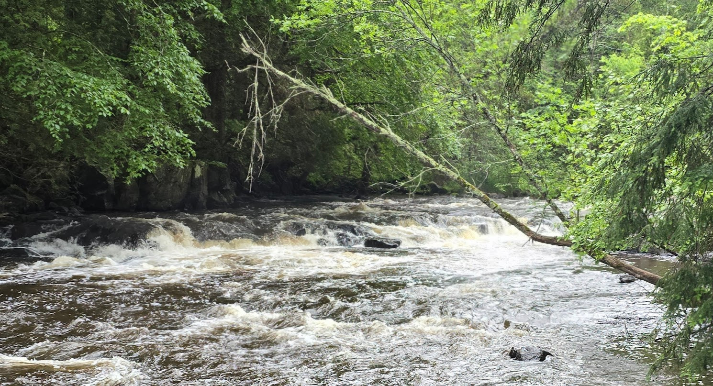
(20 June 2024 CHEQUAMEGON-NICOLET NATIONAL FOREST, WI) Warm humid air and open farm fields characterized most of the day. The planned destination of High Cliff State Park sits on the Niagara Escarpment.
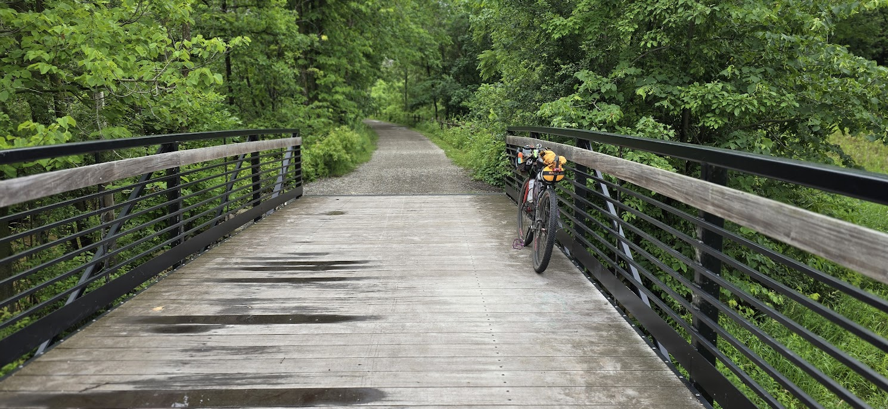
The Niagara Escarpment runs from New York through Ontario, Michigan, and Wisconsin. It is the cliff over which the Niagara River flows, creating Niagara Falls. The escarpment is a UNESCO World Biosphere Reserve containing the oldest forest ecosystem in eastern North America. This wall of rock was not caused by a fault but rather the result of unequal erosion. The capstone of the escarpment is dolomitic limestone (dolostone) and is more resistant to erosion than the shale and other surrounding rock. The escarpment formed over millions of years, shaping the basins and landforms of Lake Ontario, Lake Huron, and Lake Michigan.
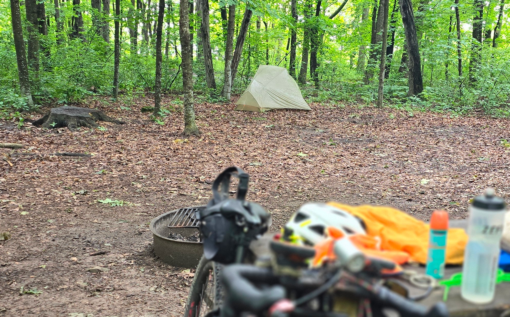
The route from the Bagley Rapids campground was mostly over quiet paved farm roads. The Nicolet State Trail into Suring was still wet from last night's rain. Evidence of ATV use on this section included large potholes and some washboard, but the mountain bike tires on the bikepacking bike handled the surface with ease. I enjoyed a second breakfast in Suring at Laverne & Gail's Diner, which caters to the farming community. Cell service here wasn't good enough to book a campsite at High Cliff State Park, which is by far the most popular camping location on this trip. I'm not too concerned provided I book sometime this morning because it's a Thursday and not the weekend.
Not long after rolling out of Suring, the rain came. More farm roads led to a bike path, the Mountain Bay State Trail. The fine gravel path delivered me to Pulaski and a chance to get out of the rain. The Mountain Bay trail was made for bikers and hikers and was smooth by comparison to the ATV trails used earlier. I wasn't the only cyclist that sought refuge in the Shell Station convenience store. The motorcyclist sat quietly with his coffee and bakery and stared at the radar on his phone, hoping to delay or avoid riding in more rain. I took the opportunity to book a campsite near the edge of the Niagara Escarpment at High Cliff State Park.
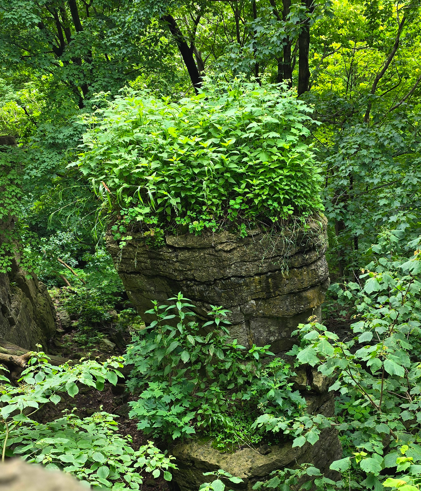
Fortunately, the rain had stopped before my efforts landed me in Kaukauna, which appears to be a suburb of Appleton. Busy streets, multiple lanes of traffic, and road construction eventually led to another bike path, the Kankapot Creek Trail. Parallel to this route, I marked out several places to resupply for a late lunch and a dinner to take to camp. These were along a street that ran parallel to the trail and would require mixing it up with traffic once again -- no thank you. There was a bar and grill on route, not far from the state park, that provided all that was necessary. No milk, though, despite Wisconsin being the dairy state.
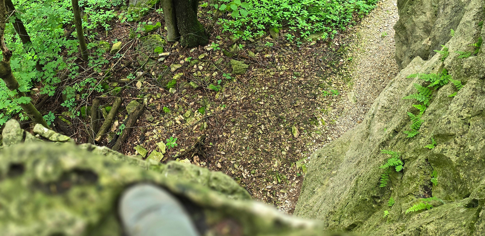
As expected, it was early enough to do some exploring at High Cliff State Park. The trails wind around the property, but I found the trail a few yards from my campsite to be the most interesting. This part of the trail runs along the top edge of the escarpment. The drop from the cliff at this point was about 200 feet to the forest floor below and Lake Winnebago beyond. I felt very satisfied with my trip over dinner at the campsite picnic table. I set out to experience some wilderness in Wisconsin and Michigan, have a bikepacking adventure with my buddy Bill, and investigate the Niagara escarpment in Wisconsin. It was an exceptional trip, mostly because everything went according to plan. Well, the hike to the remote cabin was more difficult than expected, and it rained almost every day or night, but on a ten-day trip, that's nothing.

(21 June 2024 HIGH CLIFF STATE PARK, WI) The plan was to start and end the trip from home. From the state park, it was a relatively easy two-day trip that could be accomplished in one long day if I felt like it. I did feel like it, mostly because the forecast was calling for two days of heavy rain along my route. My wife Pat and I talked, and we decided she would rather have me home, and I would rather not travel through the forecasted heavy rain and storms.
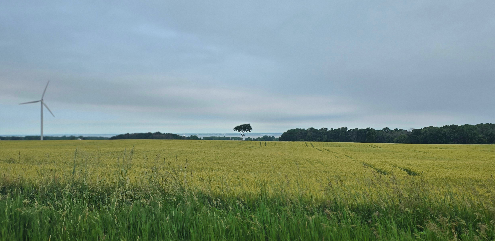
The morning was lovely, of course. A nice comfortable temperature and partly cloudy skies despite the forecast. I enjoyed about twenty miles of the route home before Pat appeared to take me back home. Feeling thoroughly satisfied with this trip, I knew I would enjoy the memories for many years to come.
Things to Know
The Route
Ride With GPS route from Madison, Wisconsin to Lake Superior and back. This is the planned route edited to correspond to the actual route taken where possible.
Favorite Stops to Eat
Norm's Eatery & Tap in Lyndon Station
West River Cafe in Nekoosa
Casa Amigos in Merril
Antonio's Restaurant & Pizzeria in Bergland
Paul's Restaurant in Silver City, 906.885.5311
Sly's Cafe in Ontonagon
Contrast Coffee in Iron River, MI gets the best stop of the tour award
Laverne & Gail's Diner in Suring, 920.590.1440
Camping
Camping opportunities are indicated on the Ride With GPS route. Carry your bike when accessing sites on hiking trails which do not allow bicycling. Dispersed camping is allowed in national forests be sure to follow the rules.
Photo Gallery with Comments
Photo Gallery on Ride With GPS
Summary
Day 1 Madison to Buckhorn State Park, 93 miles, 3,257 ft climbing
Day 2 Buckhorn State Park to Merril, WI, 120 miles, 2,854 ft climbing
Day 3 Merril, WI to Boulder Junction, WI, 89 miles, 2,166 ft climbing
Day 4 Boulder Junction, WI to Boulder Junction, WI, 35 miles, 997 ft climbing
Day 5 Boulder Junction, WI to Porcupine Mountains Wilderness State Park, MI, 89 miles, 2,413 ft climbing
Day 6 Porcupine Mountains to Ontonagon, MI, 30 miles, 1,200 ft climbing
Day 7 Ontonagon, MI to Ottawa National Forest, 84 miles, 3,485 ft of climbing
Day 8, Ottawa National, MI Forest, to Nicolet National Forest, WI, 110 miles, 3,524 ft of climbing
Day 9 Nicolet National Forest to High Cliff State Park, WI, 89 miles, 1,513 ft of climbing
Day 10 High Cliff State Park to Farm Road, 21 miles, 588 ft of climbing